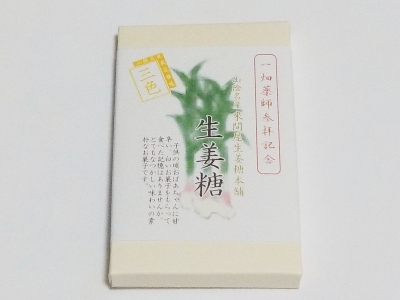

一畑薬師参拝記念の來間屋生姜糖本舗の生姜糖を買いました。
更新日 : 2026/01/03

紅白の生姜糖が2個づつと抹茶糖2個の計6個入りでした。
砂糖菓子に生姜味と抹茶味が付いたものです。観光サイトや観光雑誌等でよく見る商品ですが、私は自分で買ったのは初めてかも。
砂糖味を生かしつつ、抹茶や生姜の味が入ってました。
一畑薬師の売店で税込み350円で買いました。
島根県出雲市平田町774
更新日 : 2026/01/03

紅白の生姜糖が2個づつと抹茶糖2個の計6個入りでした。
砂糖菓子に生姜味と抹茶味が付いたものです。観光サイトや観光雑誌等でよく見る商品ですが、私は自分で買ったのは初めてかも。
砂糖味を生かしつつ、抹茶や生姜の味が入ってました。
一畑薬師の売店で税込み350円で買いました。